TIPS Dataset¶
import pandas as pd
import seaborn as sns
import matplotlib.pyplot as plt
tips = pd.read_csv('https://frenzy86.s3.eu-west-2.amazonaws.com/fav/tips.csv')
tips.head()
/usr/local/lib/python3.6/dist-packages/statsmodels/tools/_testing.py:19: FutureWarning: pandas.util.testing is deprecated. Use the functions in the public API at pandas.testing instead. import pandas.util.testing as tm
| total_bill | tip | sex | smoker | day | time | size | |
|---|---|---|---|---|---|---|---|
| 0 | 16.99 | 1.01 | Female | No | Sun | Dinner | 2 |
| 1 | 10.34 | 1.66 | Male | No | Sun | Dinner | 3 |
| 2 | 21.01 | 3.50 | Male | No | Sun | Dinner | 3 |
| 3 | 23.68 | 3.31 | Male | No | Sun | Dinner | 2 |
| 4 | 24.59 | 3.61 | Female | No | Sun | Dinner | 4 |
A data frame with 244 observations on the following 8 variables.
total_bill: a numeric vector, the bill amount (dollars)
**tip:**a numeric vector, the tip amount (dollars)
sex: factor with levels Female Male, gender of the payer of the bill
smoker: factor with levels No Yes, whether the party included smokers
day: factor with levels Friday Saturday Sunday Thursday, day of the week
time: factor with levels Day Night, rough time of day
size: numeric vector, number of people in party
tips
| total_bill | tip | sex | smoker | day | time | size | |
|---|---|---|---|---|---|---|---|
| 0 | 16.99 | 1.01 | Female | No | Sun | Dinner | 2 |
| 1 | 10.34 | 1.66 | Male | No | Sun | Dinner | 3 |
| 2 | 21.01 | 3.50 | Male | No | Sun | Dinner | 3 |
| 3 | 23.68 | 3.31 | Male | No | Sun | Dinner | 2 |
| 4 | 24.59 | 3.61 | Female | No | Sun | Dinner | 4 |
| ... | ... | ... | ... | ... | ... | ... | ... |
| 239 | 29.03 | 5.92 | Male | No | Sat | Dinner | 3 |
| 240 | 27.18 | 2.00 | Female | Yes | Sat | Dinner | 2 |
| 241 | 22.67 | 2.00 | Male | Yes | Sat | Dinner | 2 |
| 242 | 17.82 | 1.75 | Male | No | Sat | Dinner | 2 |
| 243 | 18.78 | 3.00 | Female | No | Thur | Dinner | 2 |
244 rows × 7 columns
# sns.set()
# tips = sns.load_dataset("tips")
# tips.head()
tips.describe()
| total_bill | tip | size | |
|---|---|---|---|
| count | 244.000000 | 244.000000 | 244.000000 |
| mean | 19.785943 | 2.998279 | 2.569672 |
| std | 8.902412 | 1.383638 | 0.951100 |
| min | 3.070000 | 1.000000 | 1.000000 |
| 25% | 13.347500 | 2.000000 | 2.000000 |
| 50% | 17.795000 | 2.900000 | 2.000000 |
| 75% | 24.127500 | 3.562500 | 3.000000 |
| max | 50.810000 | 10.000000 | 6.000000 |
tips.info()
<class 'pandas.core.frame.DataFrame'>
RangeIndex: 244 entries, 0 to 243
Data columns (total 7 columns):
# Column Non-Null Count Dtype
--- ------ -------------- -----
0 total_bill 244 non-null float64
1 tip 244 non-null float64
2 sex 244 non-null object
3 smoker 244 non-null object
4 day 244 non-null object
5 time 244 non-null object
6 size 244 non-null int64
dtypes: float64(2), int64(1), object(4)
memory usage: 13.5+ KB
sns.countplot(x='smoker',data=tips);
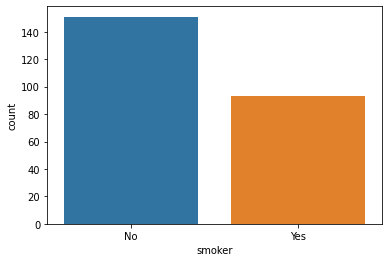
sns.countplot(x='sex',data=tips);
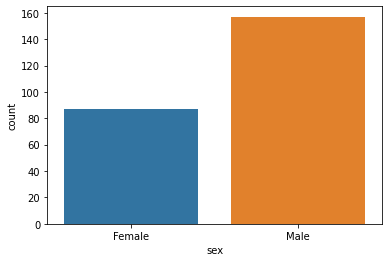
sns.countplot(x='day',data=tips);
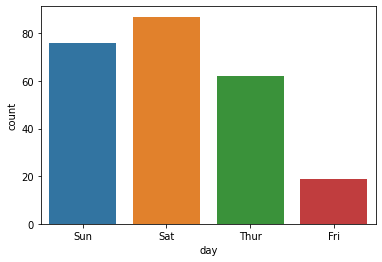
plt.figure(figsize=(19,8))
sns.countplot(x='time',data=tips);
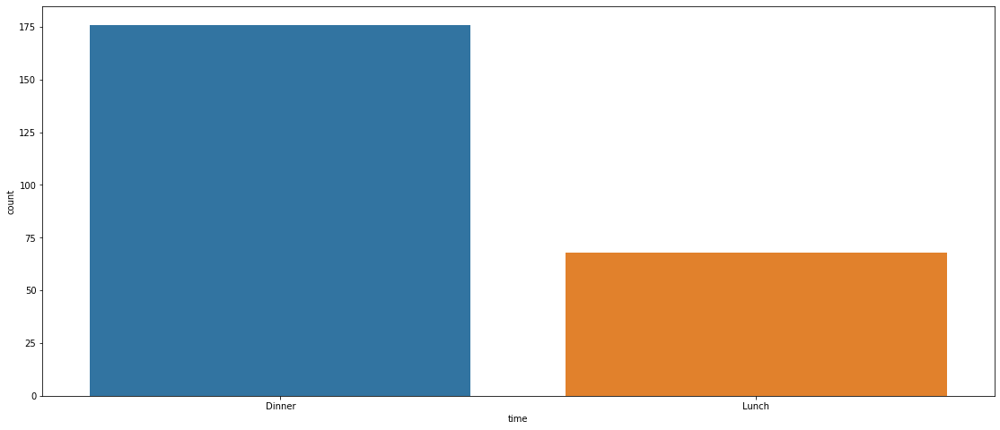
sns.countplot(y='time',data=tips);
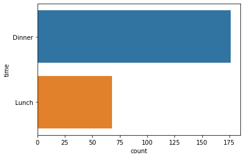
sns.pairplot(tips,height=4,corner=True)
<seaborn.axisgrid.PairGrid at 0x7fb5dc8b27f0>
## Categorical = 'sex', 'smoker' , 'day', 'time' , 'size'
sns.pairplot(tips,height=4,hue='sex');
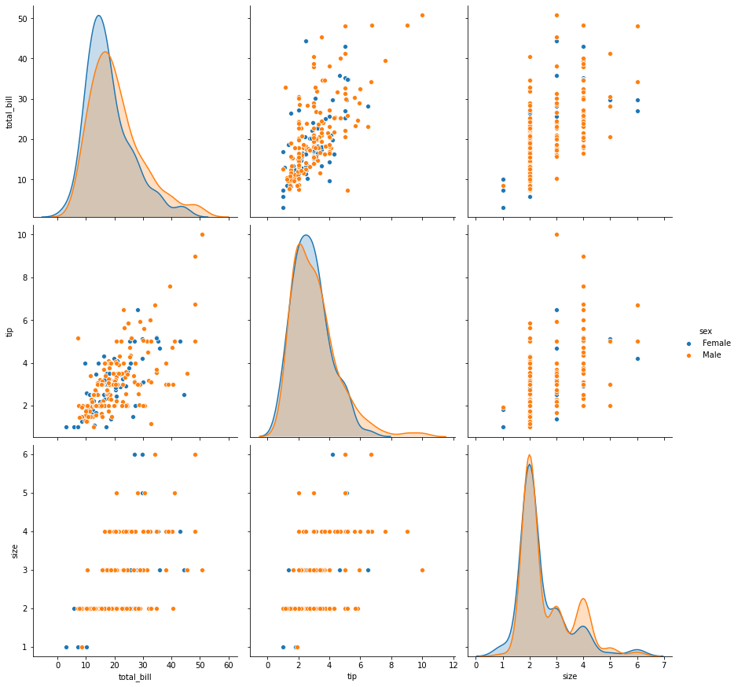
sns.pairplot(tips,height=4,hue='smoker');
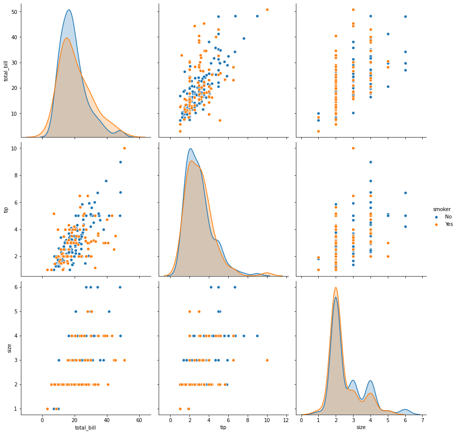
sns.pairplot(tips,height=4,hue='day');
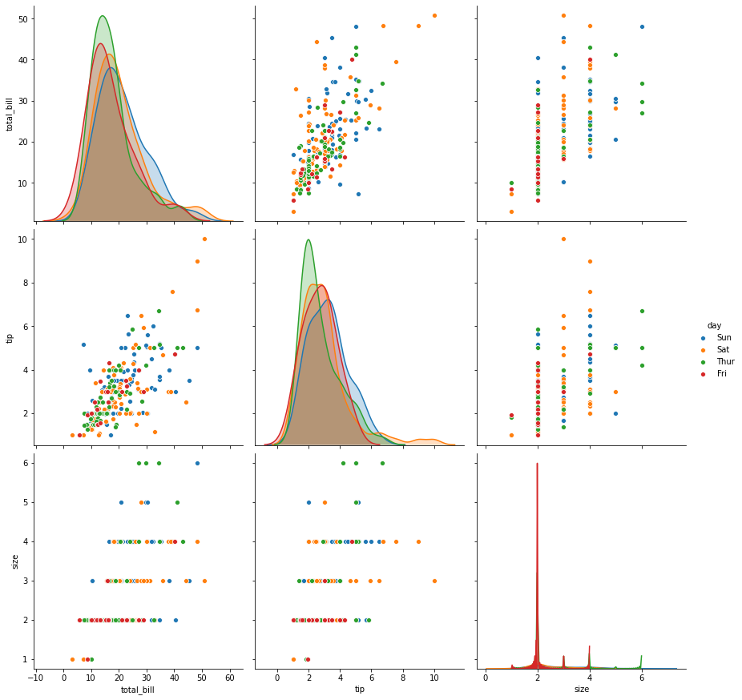
sns.pairplot(tips,height=4,hue='time');
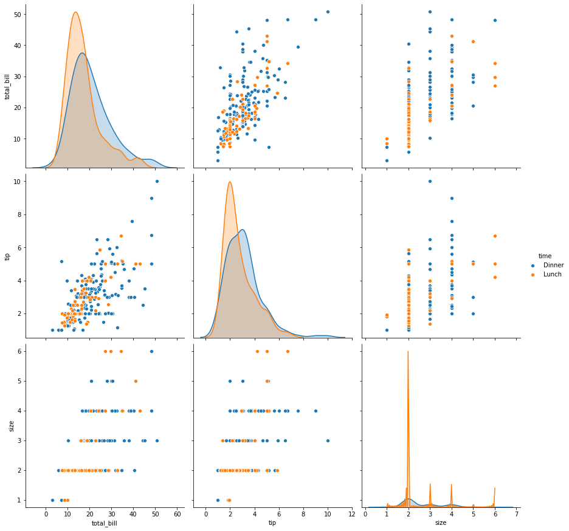
sns.pairplot(tips,height=4,hue='size');
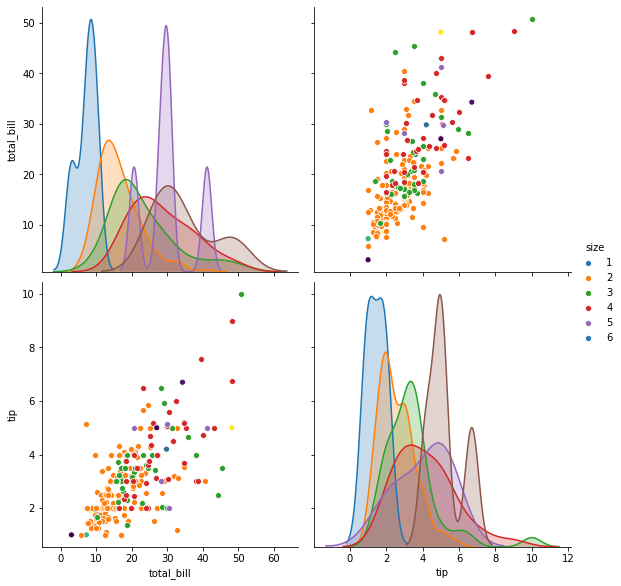
sns.relplot(x="total_bill", y="tip", hue="day",
col="time", row="sex", data=tips);
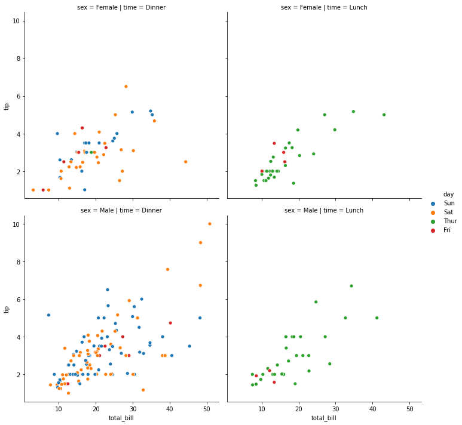
sns.relplot(x="total_bill", y="tip", col="time",hue="smoker", size="size",
data=tips);
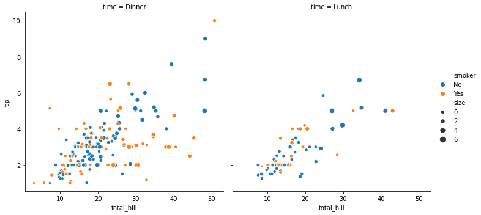
sns.relplot(x="total_bill", y="tip", hue="time",col="day", data=tips)
<seaborn.axisgrid.FacetGrid at 0x7fb5d61d31d0>
sns.relplot(x="total_bill", y="tip", hue="time",col="day", col_wrap=2, data=tips)
<seaborn.axisgrid.FacetGrid at 0x7fb5d5fec898>
sns.catplot(x="day", y="total_bill", hue="smoker",kind="swarm", data=tips,
height=8, aspect=1);
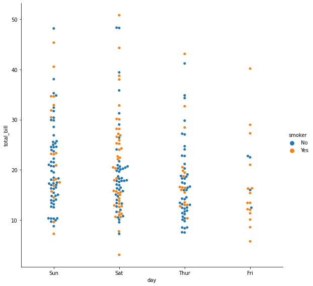
sns.catplot(x="day", y="total_bill", hue="smoker",kind="violin", split=True, data=tips,
height=8,aspect=1);
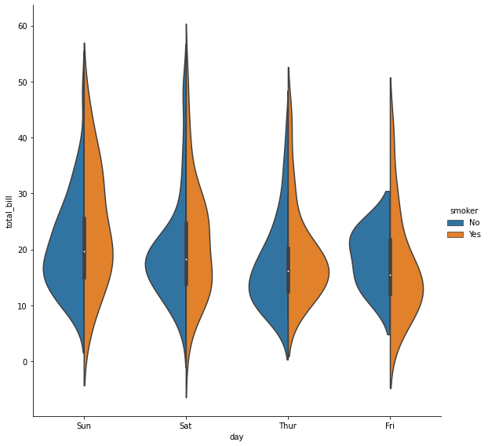
plt.figure(figsize=(19,8))
sns.scatterplot(x="total_bill", y="tip", data=tips);
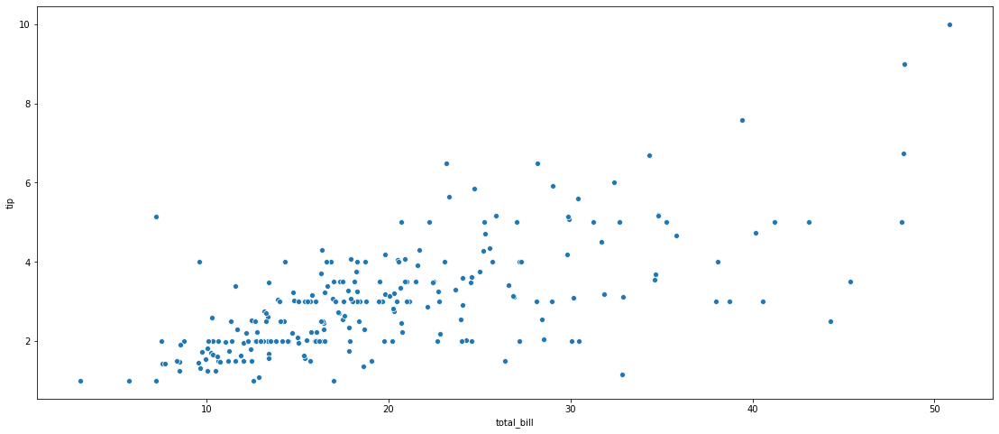
plt.figure(figsize=(19,8))
sns.distplot(tips['tip']);
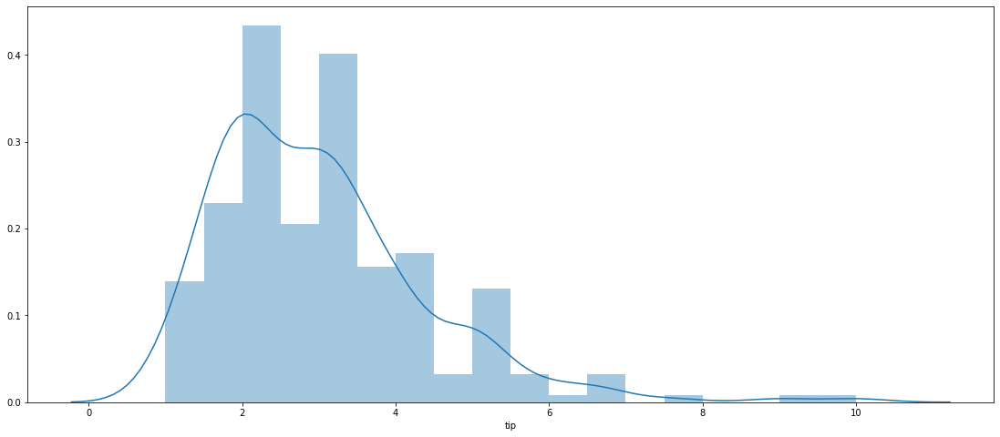
plt.figure(figsize=(19,8))
sns.barplot(x="day", y="tip", data = tips);
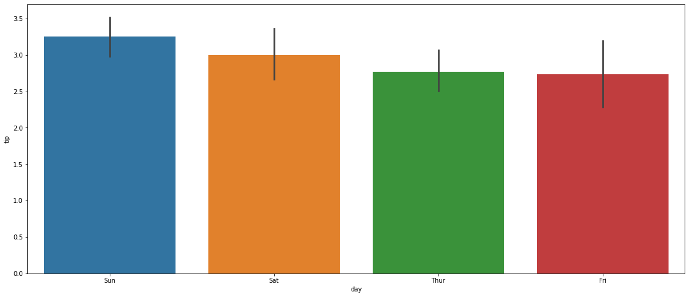
fig,ax =plt.subplots(1, 2, sharey=True, figsize=(16, 10))
sns.boxplot(x="day", y="tip", data=tips, ax=ax[0])
sns.scatterplot(x="total_bill", y="tip", hue="day", data=tips, ax=ax[1]);
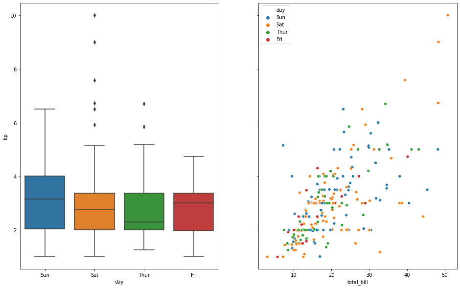
plt.figure(figsize=(19,8))
sns.regplot(x="total_bill", y="tip", data=tips);
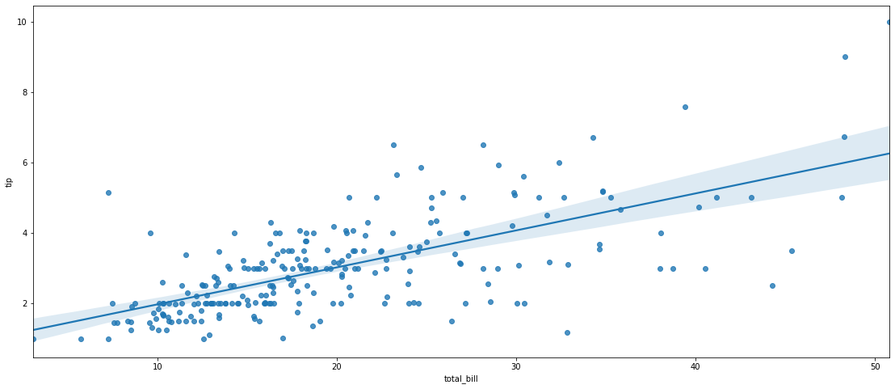
sns.jointplot(x='total_bill',y='tip',data=tips,kind='reg',height=16)
<seaborn.axisgrid.JointGrid at 0x7fb5d6632240>
tips.corr()
| total_bill | tip | size | |
|---|---|---|---|
| total_bill | 1.000000 | 0.675734 | 0.598315 |
| tip | 0.675734 | 1.000000 | 0.489299 |
| size | 0.598315 | 0.489299 | 1.000000 |
plt.subplots(figsize=(15,12))
sns.heatmap(tips.corr(), annot = True);#, annot_kws={'size': 12});
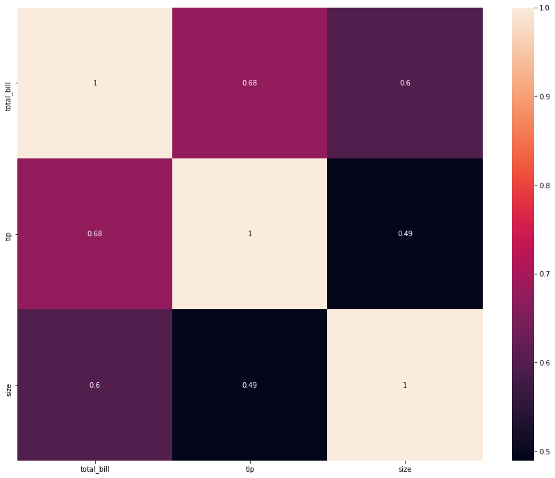
sns.pairplot(data=tips,kind="reg", size=4);
/usr/local/lib/python3.6/dist-packages/seaborn/axisgrid.py:2071: UserWarning: The `size` parameter has been renamed to `height`; please update your code. warnings.warn(msg, UserWarning)
sns.pairplot(data=tips,kind="reg", size=4, hue="sex");
/usr/local/lib/python3.6/dist-packages/seaborn/axisgrid.py:2071: UserWarning: The `size` parameter has been renamed to `height`; please update your code. warnings.warn(msg, UserWarning)
sns.pairplot(data=tips,kind="reg", size=4, hue="smoker")
/usr/local/lib/python3.6/dist-packages/seaborn/axisgrid.py:2071: UserWarning: The `size` parameter has been renamed to `height`; please update your code. warnings.warn(msg, UserWarning)
<seaborn.axisgrid.PairGrid at 0x7f31f87d08d0>
from sklearn.linear_model import LinearRegression
df = tips.copy()
df.head()
| total_bill | tip | sex | smoker | day | time | size | |
|---|---|---|---|---|---|---|---|
| 0 | 16.99 | 1.01 | Female | No | Sun | Dinner | 2 |
| 1 | 10.34 | 1.66 | Male | No | Sun | Dinner | 3 |
| 2 | 21.01 | 3.50 | Male | No | Sun | Dinner | 3 |
| 3 | 23.68 | 3.31 | Male | No | Sun | Dinner | 2 |
| 4 | 24.59 | 3.61 | Female | No | Sun | Dinner | 4 |
df.info()
<class 'pandas.core.frame.DataFrame'>
RangeIndex: 244 entries, 0 to 243
Data columns (total 7 columns):
# Column Non-Null Count Dtype
--- ------ -------------- -----
0 total_bill 244 non-null float64
1 tip 244 non-null float64
2 sex 244 non-null object
3 smoker 244 non-null object
4 day 244 non-null object
5 time 244 non-null object
6 size 244 non-null int64
dtypes: float64(2), int64(1), object(4)
memory usage: 13.5+ KB
X = df[['total_bill','size']]
y = df['tip']
X
| total_bill | size | |
|---|---|---|
| 0 | 16.99 | 2 |
| 1 | 10.34 | 3 |
| 2 | 21.01 | 3 |
| 3 | 23.68 | 2 |
| 4 | 24.59 | 4 |
| ... | ... | ... |
| 239 | 29.03 | 3 |
| 240 | 27.18 | 2 |
| 241 | 22.67 | 2 |
| 242 | 17.82 | 2 |
| 243 | 18.78 | 2 |
244 rows × 2 columns
model = LinearRegression(fit_intercept=True)
model
LinearRegression(copy_X=True, fit_intercept=True, n_jobs=None, normalize=False)
#X = X.values.reshape(-1,1)
X.ndim
2
X.shape
(244, 2)
y.shape
(244,)
model.fit(X,y)
LinearRegression(copy_X=True, fit_intercept=True, n_jobs=None, normalize=False)
model.coef_
array([0.09271334, 0.19259779])
model.intercept_
0.6689447408125031
model.predict([[220,3]])
array([21.64367223])